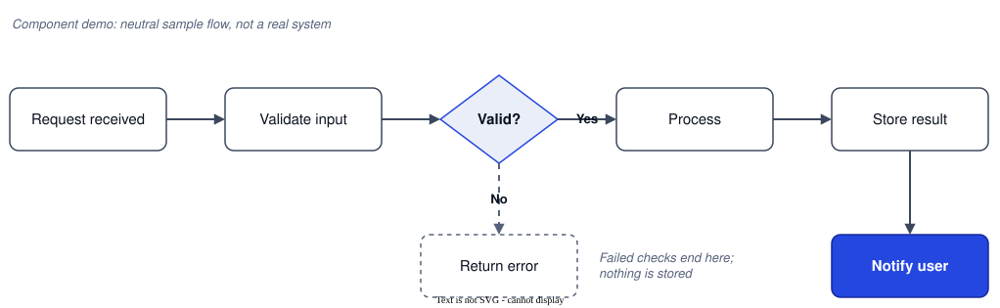

Case study · Independent analysis
Case study template
Content slot: title and thesis. Replace the heading with "[Product]: [one-line thesis]" and put a two-sentence summary of the argument here.
Independent analysis. Based only on publicly available information. Not affiliated with or endorsed by the company. No employer or client information is used.
Context
Content slot. What the product is, who makes it, the market it plays in, and why it matters now. Two or three short paragraphs.
Diagram slot · component demo, replace with your diagram

Text description
A request is received and its input is validated. A decision checks whether the input is valid. If it is not, the flow returns an error and nothing is stored. If it is, the request is processed, the result is stored, and the user is notified. An annotations layer labels the diagram as a component demo.
{kind=link}
Who it serves
Content slot. Primary users and buyers (if different), the jobs they hire the product for, and what they used before.
What works
Content slot. Three to five strengths. Each one gets a short explanation and a citation to a public source.
Where it breaks
Content slot. Three to five gaps or friction points, with evidence. Mark which are observed (you tried it, or a source shows it) and which are inferred.
Strategic read
Positioning
Content slot. Who it's for, what it replaces, and why customers pick it over the alternatives.
Business model
Content slot. How it makes money, from public pricing and filings, and what that rewards the company for doing.
Moat
Content slot. What is hard to copy (data, distribution, switching costs, network effects), and how durable it is.
What I'd do
Content slot. Two or three recommendations. For each: the move, why now, what it costs, and what you give up. A comparison table or a 2×2 matrix works well here (see the Design System page).
How I'd measure it
Content slot. One outcome metric, three to five input metrics that move it, and the guardrails that must not get worse.
Public sources
Content slot. Numbered list: title, publisher, link, and the date you accessed it. Only public material.